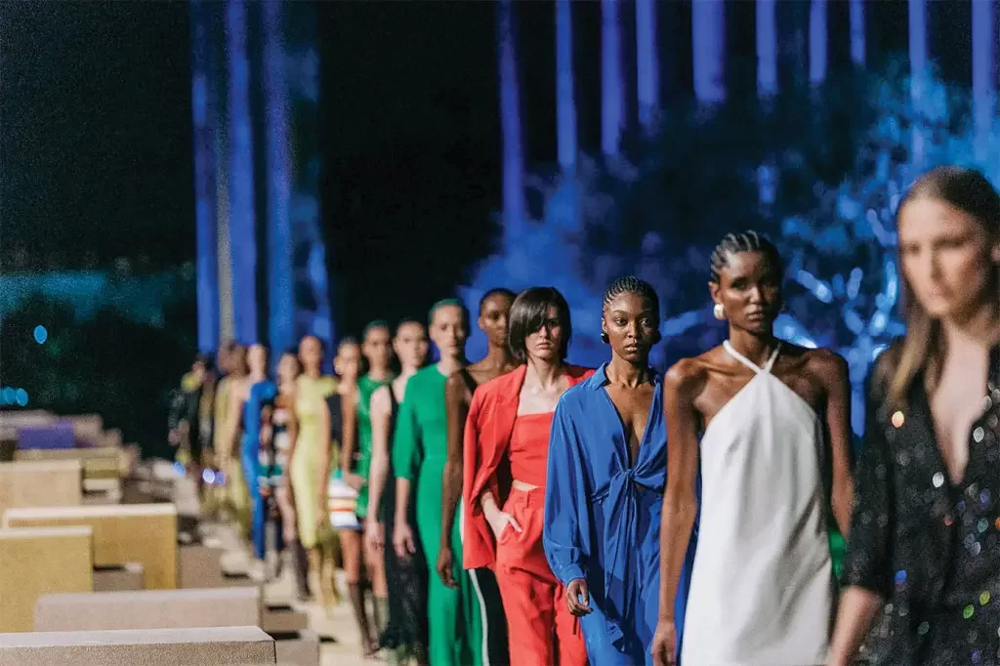

COMO A MODA INFLUENCIA NA VIDA DAS PESSOAS.
Quando você entra no provador de uma loja com as peças que escolheu na arara ou na vitrine, você está carregando também um pouco da sua história, o que pensa sobre si mesmo e, de como espera que a sociedade te enxergue e te reconheça. Nesse momento de provador conseguimos medir nossa autoestima, e é aqui que podemos iniciar um processo de resgate de sua autoestima e confiança. Não tem nada melhor do que se sentir confiante e segura de si mesma em qualquer situação, e é por isso que a moda e a autoestima andam sempre tão interligadas. A capacidade de uma simples peça de roupa vai além de enaltecer um corpo ou ser mais um artigo que faz parte da rotina. Um vestido, calça, blusa e até uma lingerie sexy podem transformar o bem-estar de uma mulher ao fazê-la se sentir linda e autêntica. Homens e mulheres se beneficiam das mesmas vantagens que a moda trás para o lado psicológico.
As roupas possuem um potencial imprescindível para impulsionar e motivar a autoestima. A moda tem uma função transformadora de não se limitar somente a peças e combinações, relacionando-se com a personalidade de quem as veste. Segundo pesquisas, o estilo das roupas pode refletir diretamente no humor, saúde e autoconfiança. Nossa imagem pessoal é uma ferramenta, ela é um meio para você alcançar outras coisas na sua vida. Através de sua imagem pessoal é possível, por exemplo, conseguir uma promoção no trabalho, alavancar seu negócio, crescer e atrair mais clientes, adquirir mais credibilidade, melhorar sua comunicação nas mídias digitais e marketing digital.
Nosso estilo está acima das tendências, e o que “está na moda” nós devemos filtrar e captar apenas a essência do que é tendência, e adaptar ao nosso estilo pessoal, sendo esse o mais importante no momento de montar qualquer look. Ter um estilo próprio é muito mais do que ter um armário lotado de roupas. Quando conseguimos relacionar a moda com autoestima, podemos usá-la a nosso favor e eleger peças que valorizem o corpo e nos deixem seguras no dia a dia.